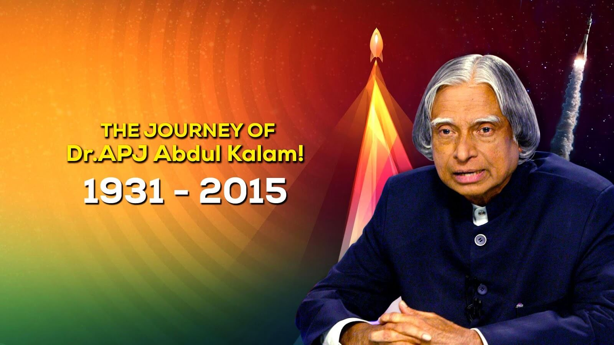

Dr A P J Abdul Kalam

The Journey of Dr APJ Abdul Kalam 1931-2015
Here's more information on Dr A P J Abdul Kalam's life:
-
Born - Avul Pakir Jainulabdeen Abdul Kalam
15 October 1931
Rameswaram, Madras Presidency, British India
-
Died - 27 July 2015 (aged 83)
Shillong, Meghalaya, India
-
Resting place - Dr. A. P. J. Abdul Kalam National Memorial
-
Nationality - Indian
-
Alma mater
St. Joseph's College, Tiruchirappalli
Madras Institute of Technology
-
Profession
Aerospace Scientist | Author
- Awards
Padma Bhushan (1981)
Padma Vibhushan (1990)
Bharat Ratna (1997)
Hoover Medal (2009)
NSS Von Braun Award (2013)
-
Notable work(s)
Wings of Fire, India 2020, Ignited Minds, Indomitable Spirit, Transcendence: My Spiritual Experiences with Pramukh Swamiji
-
Scientific Career
Fields - Aerospace Engineering
Institutions - Defence Research and Development Organisation, Indian Space Research Organisation